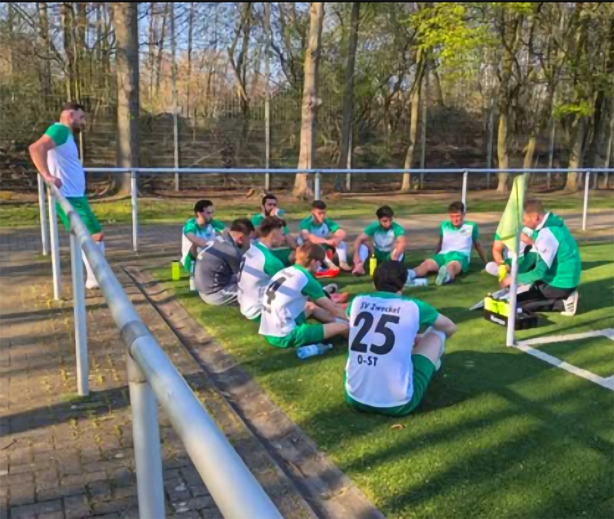

Kleine Kicker. Große Träume.
Dein erstes
Heimspiel.
Du hast Lust auf Fußball? Entdecke unsere Jugend und vereinbare ein Probetraining. Wir freuen uns auf neue Mitspielerinnen und Mitspieler.

Dein Verein. Dein Zuhause.
Für den Fußball. Für unsere Nachbarn. Für die Momente, die bleiben. Willkommen beim SV Zweckel 23 e. V.
Heimspiel ist
ein Gefühl.
Uli-Simon-Arena
Dorstener Straße 43 · Gladbeck
01 / Rund um den SVZ
Ausgewählte Vereinsmeldungen · Stand 02.10.2026 · Originalberichte auf svzweckel.de

Vereinsarchiv02 / Zusammen auf dem Platz
Der Fußball bringt uns zusammen. Lerne unsere Teams kennen und finde deinen Platz in der schwarz-grünen Gemeinschaft.
Kleine Kicker. Große Träume.
Du hast Lust auf Fußball? Entdecke unsere Jugend und vereinbare ein Probetraining. Wir freuen uns auf neue Mitspielerinnen und Mitspieler.
Nicht nur dabei. Mittendrin.
Als Spieler, als Fan oder im Ehrenamt: Ein Verein lebt von den Menschen, die mitmachen. Werde ein Teil davon.
03 / Verwurzelt in Zweckel
Seit 1923 tragen wir Schwarz und Grün. Unser Zuhause ist der Sportplatz an der Dorstener Straße. Was uns ausmacht, sind nicht nur die 90 Minuten, sondern die Menschen davor, danach und mittendrin.
Die Gründung des SV Zweckel. Schwarz und Grün werden unsere Vereinsfarben.
Ein Jahrhundert Fußball, Ehrenamt und Gemeinschaft in unserem Stadtteil.
Wir schreiben die Geschichte weiter. Zusammen mit dir und der nächsten Generation.
04 / Trag deine Farben
Produktauswahl als Vorschau. Verfügbare Modelle, Größen und Preise findest du im offiziellen JAKO-Teamshop.